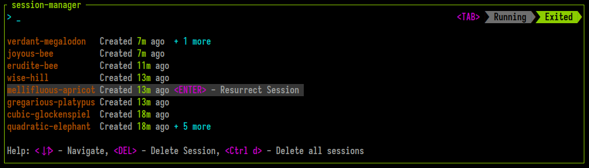
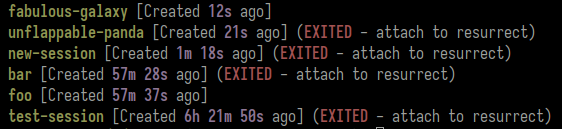

Session Resurrection
 Zellij includes built-in session resurrection capabilities. This means that by default, each Zellij session is serialized and kept in the user's cache folder waiting to be recreated after an intentional quit or an unintentional crash.
These exited resurrectable sessions can be listed through the CLI or the built-in session-manager. They can be resurrected through the CLI by attaching to them or through the session-manager by selecting them in the EXITED section.
What is Resurrected and how to Configure
By default, Zellij serializes the session layout (panes and tabs) and the command running in each pane (it will re-run them in command panes). Through configuration it's possible to have Zellij also serialize and resurrect the pane viewport and scrollback.
Zellij does not immediately run resurrected commands, but rather places them behind a "Press ENTER to run..." banner so as to prevent uncomfortable accidents with things like rm -rf.
session_serialization
To disable session serialization (and thus also resurrection), set session_serialization false in the config.
pane_viewport_serialization
When session_serialization is enabled, setting pane_viewport_serialization to true in the config will also serialize the pane viewport (the part of the terminal visible on screen).
scrollback_lines_to_serialize
When pane_viewport_serialization is enabled, setting scrollback_lines_to_serialize to 0 in the config will serialize all scrollback and to any other number will serialize line number up to that scrollback. Note that this might incur higher resource utilization (and certainly a higher cache folder usage...)
post_command_discovery_hook
When Zellij attempts to discover commands running inside panes so that it can serialize them, it can sometimes be inaccurate. This can happen when (for example) commands are run inside some sort of wrapper. To get around this, it's possible to define a post_command_discovery_hook. This is a command that will run in the context of te user's default shell and be provided the $RESURRECT_COMMAND that has just been discovered for a specific pane and not yet serialized. Whatever this command sends over STDOUT will be serialized in place of the discovered command.
Example:
post_command_discovery_hook "echo \"$RESURRECT_COMMAND\" | sed 's/^sudo\\s\\+//'" // strip sudo from commands
Resurrecting Sessions through the CLI
To list exited sessions, use zellij list-sessions (or zellij ls) for short:

Then, in order to resurrect a session, one can attach to it. If you'd like to immediately run all resurrected commands and skip the "Press ENTER to run..." banner, you can issue the --force-run-commands flag.
Resurrecting Sessions through the session-manager
Sessions can also be resurrected and switched to from within a Zellij session using the session-manager. To do this, press <TAB> to toggle the EXITED sessions and select one with <ENTER>.
Permanently Deleting Sessions
Resurrectable sessions can be permanently deleted with the zellij delete-session or zellij delete-all-sessions CLI commands. They can also be deleted from the session-manager.
Session files in the cache
Zellij serializes the session data into a layout every 1 second and saves it to the system's cache folder. These layouts can later be examined, altered and even shared as is across machines. They can be loaded with zellij --layout session-layout.kdl just like any other layout. They are intentionally Human readable to facilitate their re-use.